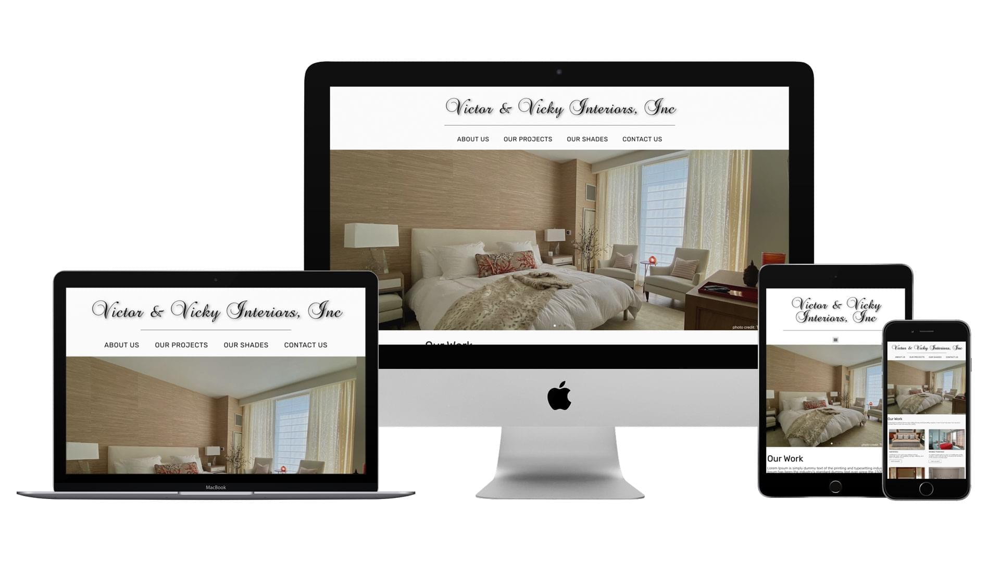
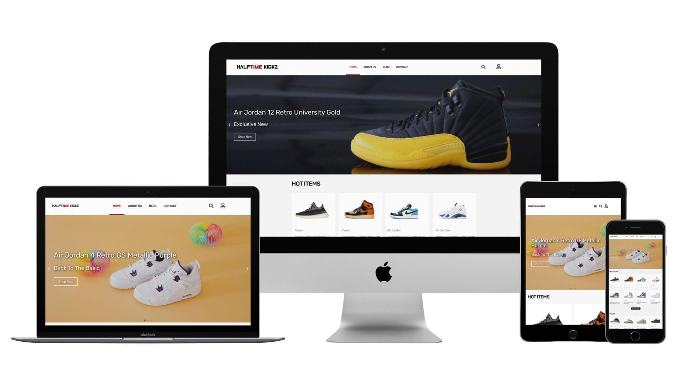
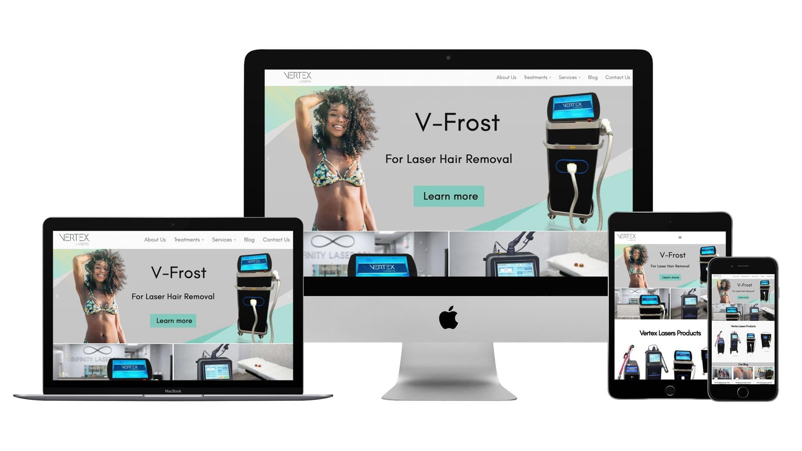
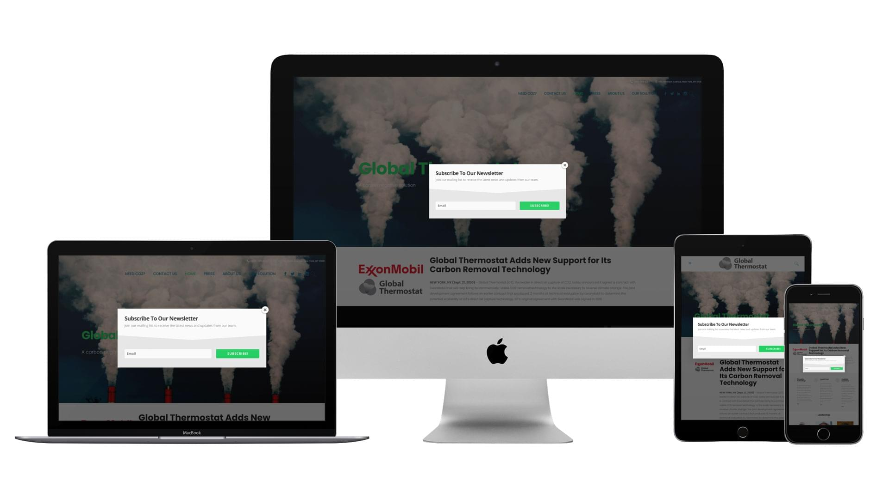
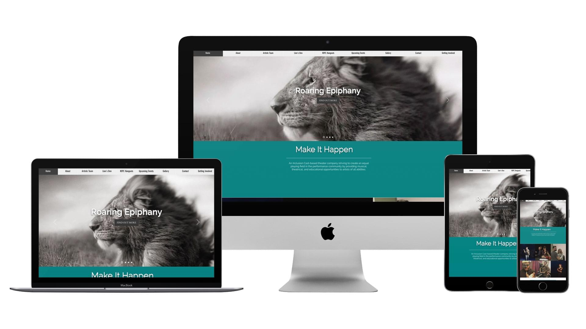
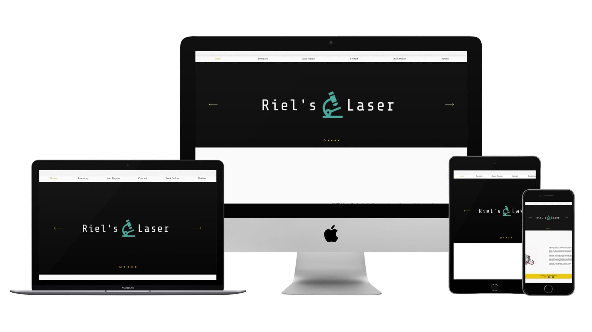
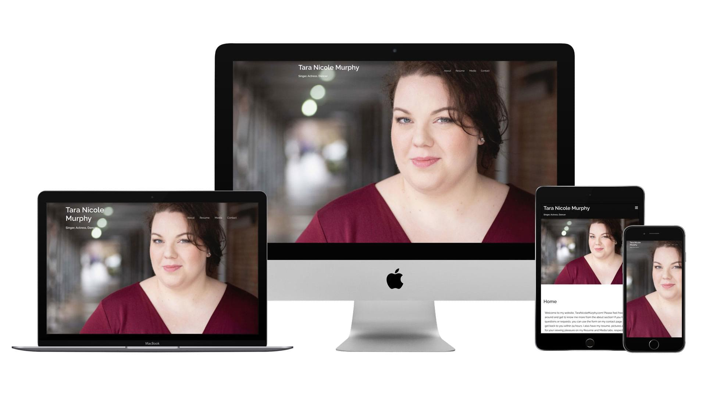

Victor & Vicky Interiors, Inc
Responsive business website supporting an interior design and manufacturing company, with emphasis on service presentation, user experience, and professional brand visibility.
Visit WebsiteA selection of responsive website projects and digital builds completed across business, e-commerce, service, nonprofit, and personal brand websites.
Project details are presented at a high level to respect client relationships, confidentiality, and NDA boundaries.

Responsive business website supporting an interior design and manufacturing company, with emphasis on service presentation, user experience, and professional brand visibility.
Visit Website
E-commerce-style sneaker website focused on product presentation, mobile-friendly browsing, and a clean digital storefront experience for rare and quality footwear.
Visit Website
Responsive website for a New York City-based laser equipment company, structured to communicate medical, cosmetic, and high-tech product information clearly.
Visit WebsiteService-based website for a laser hair removal business, built to present treatment information, establish credibility, and support customer engagement.
Visit Website
Corporate website experience for a climate technology company, focused on presenting advanced carbon dioxide removal technology in a clear and professional format.
Visit Website
Arts and production company website supporting inclusive casting, creative storytelling, and accessible presentation of theatrical and production work.
Visit Website
Responsive service website for cosmetic laser equipment repair and sales, designed to communicate technical services, equipment offerings, and business credibility.
Visit Website
Personal brand website for a performer, built to support professional visibility, storytelling, media presentation, and audience engagement.
Visit WebsiteBuilt this portfolio using a custom Node.js-based frontend pipeline with Gulp, SCSS, and Bootstrap. Implements modular HTML partials, build-time SEO optimization (meta tags and JSON-LD structured data), and a performance-focused static site architecture deployed via GitHub Pages.